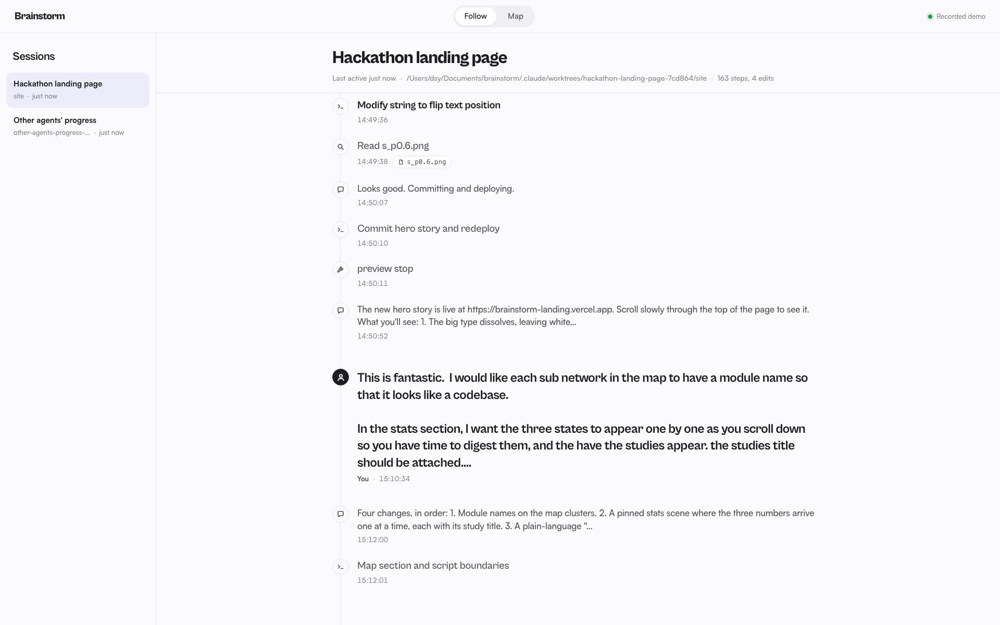

01 · Follow
Every agent step, labeled.
A live timeline of a Claude Code session: prompts, actions and code edits, each with a short plain-English label.
- Click any edit to see its diff
- Ask “why did you change this?” and get a grounded answer, with its cost shown
- Risky edits are flagged: deleted tests, auth or env files, large deletions
